생산자동화산업기사 (2013-03-10 기출문제)
1과목: 기계가공법 및 안전관리
1. 수퍼 피니싱(super finishing)의 특징과 거리가 먼 것은?
- 진폭이 수 mm 이고 진동수가 매분 수백에서 수천의 값을 가진다.
- 가공열의 발생이 적고 가공 변질층도 작으므로 가공면 특성이 양호하다.
- 다듬질 표면은 마찰계수가 작고, 내마멸성, 내식성이 우수하다.
- 입도가 비교적 크고, 경한 숫돌에 고압으로 가압하여 연마하는 방법이다.
(정답률: 73%)

2. 드릴 작업에서 너트나 볼트 머리에 접하는 면을 편평하게 하여, 그 자리를 만드는 작업은?
- 카운터 싱킹
- 스폿 페이싱
- 태핑
- 리밍
(정답률: 70%)
3. 투영기에 의해 측정을 할 수 있는 것은?
- 진원도 측정
- 진직도 측정
- 각도 측정
- 원주 흔들림 측정
(정답률: 60%)
4. 밀링 작업에서 스핀들의 앞면에 있는 24 구멍의 직접 분할판을 사용하여 분할하며 이때 웜을 아래로 내려 스핀들의 웜 휠과 물림을 끊는 분할법은?
- 간접 분할법
- 직접 분할법
- 차동 분할법
- 단식 분할법
(정답률: 80%)
5. 다음 중 선반의 규격을 가장 잘 나타낸 것은?
- 선반의 총 중량과 원동기의 마력
- 깎을 수 있는 일감의 최대지름
- 선반의 높이와 베드의 길이
- 주축대의 구조와 베드의 길이
(정답률: 64%)
6. 작업장에서 무거운 짐을 들고 운반 작업을 할 때의 설명으로 부적합한 것은?
- 짐은 가급적 몸 가까이 가져온다.
- 가능한 상체를 곧게 세우고 등을 반듯이 하여 들어올린다.
- 짐을 들어 올릴 때 충격이 없어야 한다.
- 짐은 무릎을 굽힌 자세에서 들고 편 자세에서 내려 놓는다.
(정답률: 87%)
7. 나사의 피치나 나사산의 반각과 유효지름 등을 광학적으로 쉽게 측정할 수 있는 것은?
- 공구현미경
- 오토콜리메이터
- 촉짐식 측정기
- 옵티컬 플랫
(정답률: 49%)
8. 구성인선(built up edge) 방지대책으로 잘못된 것은?
- 이송량을 감소시키고 절삭깊이를 깊게 한다.
- 공구경사각을 크게 주고 고속절삭을 실시한다.
- 세라믹 공구(ceramic tool)를 사용하는 것이 좋다.
- 공구면의 마찰계수를 감소시켜 칩의 흐름을 원활하게 한다.
(정답률: 71%)
9. 다음 수기가공 시 작업안전 수칙에 맞는 것은?
- 드라이버의 날 끝은 뾰족한 것이어야 하며, 이가 빠지거나 동그랗게 된 것은 사용 않는다.
- 정을 잡은 손은 힘을 주고 처음에는 가볍게 때리고 점차 힘을 가하도록 한다.
- 스패너는 가급적 손잡이가 짧은 것을 사용하는 것이 좋으며, 스패너의 자루에 파이프 등을 연결하여 사용하는 것이 좋다.
- 톱날은 틀에 끼워 두세 번 사용한 후 다시 조정을 하고 절단한다.
(정답률: 54%)
10. +4μm의 오차가 있는 호칭치수 30 mm의 게이지 블록과 다이얼게이지를 사용하여 비교 측정한 결과 30.274mm를 얻었다면 실제치수는?
- 30.278 mm
- 30.270 mm
- 30.266 mm
- 30.282 mm
(정답률: 64%)
11. 나이컬럼형 밀링머신에서 테이블의 상하 이동거리가 40 mm 이고, 새들의 전후 이동거리는 200 mm 라면 호칭번호는 몇 번에 해당하는가? (단, 테이블의 좌우 이동거리는 550 mm 이다.)
- 1번
- 2번
- 3번
- 4번
(정답률: 56%)
12. 초경합금 공구에 내마모성과 내열성을 향상시키기 위하여 피복하는 재질이 아닌 것은?
- TiC
- TiAI
- TiN
- TiCN
(정답률: 71%)
13. 전기도금과 반대 현상을 이용한 가공으로 알루미늄 소재 등 거울과 같이 광택 있는 가공 면을 비교적 쉽게 가공할 수 있는 것은?
- 방전가공
- 전해연마
- 액체호닝
- 레이저가공
(정답률: 66%)
14. 다음 중 기어를 절삭하는 공작기계는?
- 호빙 머신
- CNC 선반
- 지그 그라인딩 머신
- 래핑 머신
(정답률: 72%)
15. 광물섬유를 화학적으로 처리하여 원액에 80% 정도의 물을 혼합하여 사용하며, 점성이 낮고 비열과 냉각효과가 큰 절삭유는?
- 지방질 유
- 광유
- 유화유
- 수용성 절삭유
(정답률: 77%)
16. 3침법이란 수나사의 무엇을 측정하는 방법인가?
- 골지름
- 피치
- 유효지름
- 바깥지름
(정답률: 80%)
17. 주축이 수평이며 컬럼, 니이, 테이블 및 오버 암 등으로 되어 있고 새들위에 선회대가 있어 테이블을 수평면 내에서 임의의 각도로 회전할 수 있는 밀링 머신은?
- 모방밀링머신
- 만능밀링머신
- 나사밀링머신
- 수직밀링머신
(정답률: 78%)
18. 선반 작업에서 공구 절인의 선단에서 바이트 밑면에 평행한 수평면과 경사면이 형성하는 각도는?
- 여유각
- 측면 절인각
- 측면 여유각
- 경사각
(정답률: 70%)
19. 다음 센터리스 연삭기의 장·단점에 대한 설명 중 틀린 것은?
- 센터가 필요하지 않아 센터 구멍을 가공할 필요가 없고, 속이 빈 가공물을 연삭할 때 편리하다.
- 긴 홈이 있는 가공물이나 대형 또는 중량물의 연삭이 가능하다.
- 연삭숫돌 폭보다 넓은 가공물을 플랜지 컷 방식으로 연삭하 수 없다.
- 연삭숫돌의 폭이 크므로, 연삭숫돌 지름의 마멸이 적고 수명이 길다.
(정답률: 78%)
20. 연삭숫돌의 자생작용이 잘되지 않아 입자가 납작해져서 날이 둔화되는 무딤 현상은?
- 글레이징(glazing)
- 로딩(loading)
- 드레싱(dressing)
- 트리잉(truing)
(정답률: 73%)
2과목: 기계제도 및 기초공학
21. 기계구조용 합금강 강재 중 크로뮴 몰리브데넘 강에 해당하는 것은?
- SMn
- SMnC
- SCr
- SCM
(정답률: 78%)
22. 그림과 같은 투상도는 제 3각법 정투상도이다. 우측면도로 가장 적합한 것은?
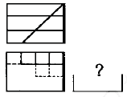
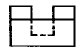
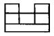
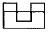
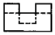
(정답률: 59%)
23. 제 3각법으로 투상되는 그림과 같은 투상도의 좌측면도로 가장 적합한 것은?
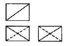
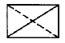
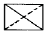
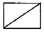
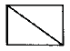
(정답률: 60%)
24. 그림과 같은 입체도를 화살표 방향에서 본 투상도로 가장 적합한 것은?
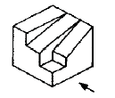
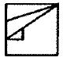
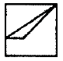
(정답률: 92%)
25. 어떤 치수가
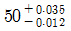
일 때 치수 공차는 얼마인가?- 0.023
- 0.035
- 0.047
- 0.012
(정답률: 88%)
26. 도면에서 다음에 열거한 선이 같은 장소에 중복되었다. 어느 선으로 표시하여야 하는가?
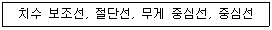
- 무게중심선
- 중심선
- 치수 보조선
- 절단선
(정답률: 77%)
27. 다음 중 가공방법의 기호를 옳게 나타낸 것은?
- 브로칭 가공 - BR
- 스크레이핑 다듬질 - SB
- 래핑 다듬질 - BR
- 평면 연삭 가공 – GBS
(정답률: 72%)
28. 나사의 종류를 표시하는 다음 기호 중에서 미터 사다리꼴나사를 표시하는 것은?
- R
- M
- Tr
- UNC
(정답률: 84%)
29. 다음 주 MMC(최대실체조건) 원리가 적용될 수 있는 기하공차는?
- 진원도
- 위치도
- 원주 흔들림
- 원통도
(정답률: 44%)
30. 스플릿 테이퍼 핀의 호칭 방법으로 옳게 나타낸 것은?
- 규격 명칭, 호칭지름×호칭길이, 재료, 지정사항
- 규격 명칭, 등급, 호칭지름×호칭길이, 재료
- 규격 명칭, 재료, 호칭지름×호칭길이, 등급
- 규격 명칭, 재료, 호칭지름×호칭길이, 지정사항
(정답률: 46%)
31. 1kW의 동력을 일의 단위로 나타내면 얼마인가?
- 98 kgf·m/s
- 102 kgf·m/s
- 112 kgf·m/s
- 130 kgf·m/s
(정답률: 67%)
32. 밀폐된 액체의 경우 가해진 압력은 그 크기가 변함없이 액체 내의 모든 곳에 똑같은 크기로 전달되는 원리는?
- 베르누이의 원리
- 파스칼의 원리
- 보일-샤를의 원리
- 질량보존의 원리
(정답률: 79%)
33. 다음 중 압력 10 kgf/cm2를 SI 단위계로 나타낸 것은?
- 100 kPa
- 980 kPa
- 980 MPa
- 100 MPa
(정답률: 73%)
34. 같은 크기의 두 힘이 한 물체에 작용할 때 합력의 크기가 가장 큰 것은?
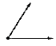
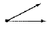
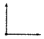
(정답률: 75%)
35. 길이를 일정하게 하고 도선의 반지름을 2배로 늘리면 저항은 어떻게 되는가?
- 1/4로 감소
- 1/2로 감소
- 2배로 증가
- 4배로 증가
(정답률: 61%)
36. 그림과 같은 직경 30mm, 높이 20mm의 원기둥에 한 변의 길이가 10mm인 정사각형 구멍이 관통되어 있을 때 체적은 몇 mm3 인가? (단, π는 3.14로 한다.)
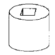
- 2200
- 12130
- 13310
- 16130
(정답률: 68%)
37. 질량 6 kg 인 어떤 물체가 힘을 받아 3 m/s2 만큼 가속되었다. 이 물체에 가해진 힘을 구하면?
- 2 N
- 18 N
- 36 N
- 54 N
(정답률: 88%)
38. 20 kgf의 힘을 가하여 원형 핸드를 돌릴 때 발생한 토크가 10kgf·m 이었다면 이 핸들의 직경은?
- 5cm
- 10cm
- 50cm
- 100cm
(정답률: 32%)
39. 110V용 전기 모텅에 5A의 전류가 흐르고 있다. 이 전기 모터를 2시간 동안 작동시켰을 때의 소비 전력량은 얼마인가?
- 1.1 kWh
- 2.1 kWh
- 3.1 kWh
- 4.1 kWh
(정답률: 72%)
40. 가위로 물체를 자르거나 전단기로 철판을 절단 할 경우에 주로 생기는 응력은?
- 인장응력
- 압축응력
- 전단응력
- 비틀림응력
(정답률: 89%)
3과목: 자동제어
41. 다음 그림에서 서보기구의 제어방식으로 맞는 것은?
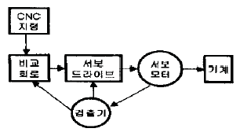
- 개방회로 방식
- 반폐쇄회로 방식
- 폐쇄회로 방식
- 하이브리드 방식
(정답률: 58%)
42. 다음 중 서보 모터에 사용되고 있는 회전 속도 검출기로 적합하지 않는 것은?
- 인코더
- 타코 제너레이터
- 리밋스위치
- 리졸버
(정답률: 81%)
43. 다음 중 서보공압장치의 특징에 대한 설명으로 적합하지 않은 것은?
- 실린더 이동 속도가 빠르다.
- 표준품 실린더를 사용하기 때문에 행정거리의 조절이 어렵다.
- 높은 위치 정밀도를 구현할 수 있다.
- 구도장치가 견고하다.
(정답률: 67%)
44. 다음의 관계식 중 옳지 않은 것은?
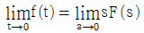
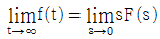
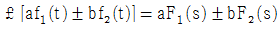
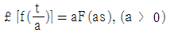
(정답률: 55%)
45. 다음 중 가변 용량형이면서 양방향 유동인 유압펌프의 기호는?
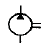
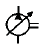
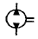
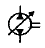
(정답률: 81%)
46. 제어계에 있어서 제어량을 지배하기 위해서 제어 대상에 가하는 양은?
- 기준압력
- 동작신호
- 제어량
- 조작량
(정답률: 73%)
47. 전압, 주파수를 제어량으로 하고 목표값을 장시간 일정하게 유지하도록 하는 제어는?
- 추종제어
- 비율제어
- 자동조정
- 서보기구
(정답률: 76%)
48. 다음 중 PLC에서 사용하는 프로그래밍 방식이 아닌 것은?
- 래더 다이어그램
- 명령어
- 순서도
- 클램프
(정답률: 73%)
49. 제어계의 응답이 빠르지 않지만 잔류편차를 없앨 수 있는 장점을 가지는 제어동작은?
- 비례제어
- 적분제어
- 미분제어
- 비례적분미분제어
(정답률: 70%)
50. 로봇 관절을 위치(각도)제어 하려고 할 때 흔히 쓰이는 센서가 아닌 것은?
- 엔코더
- 포텐쇼미터
- 스트레인게이지
- 리졸버
(정답률: 66%)
51. 상수 K를 라플라스 변환한 값은?
- 1 / K
- K2
- K / s
- K / s2
(정답률: 75%)
52. 전자계전기 자신의 a 접점을 이용하여 회로를 구성하여 스스로 동작을 유지하는 회로는?
- 우선회로
- 순차회로
- 자기유지회로
- 유극회로
(정답률: 89%)
53. 다음 전달함수에 대한 설명 중 옳지 않은 것은 무엇인가?
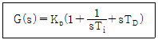
- Kp를 조절기의 비례이득이라고 한다.
- TD는 리세트율(reset rate)이라 한다.
- Ti는 적분시간이다.
- 이 조절기는 비례적분미분 동작조절기이다.
(정답률: 68%)
54. 그림에서 전달함수 [G]는?
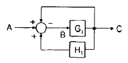
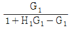
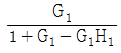
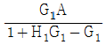
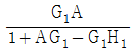
(정답률: 59%)
55. PC기반 제어에 대해 잘못 설명한 것은?
- 특별한 가동 조건에서의 시뮬레이션이 가능하다.
- 제어시스템의 일부분만 교체하는 것은 불가능하다.
- 아날로그 신호를 샘플링하여 모니터링 하는 것이 가능하다.
- 제어신호와 데이터를 외부 컴퓨터와 연결하는 것이 용이하다.
(정답률: 76%)
56. DC서보 모터의 설계 시 응답을 개선하기 위하여 고려할 사항이 아닌 것은?
- 전기적 시정수(인덕턴스/저항)를 크게 한다.
- 기계적 시정수를 작게 한다.
- 순시 최대 토크까지의 직선성을 높인다.
- 토크의 맥동을 작게 한다.
(정답률: 72%)
57. 다음 중 전자력을 이용하여 유체의 방향을 제어하는 조작 방식으로 사용되는 것은?
- 솔레노이트 밸브
- 공기압 작동 밸브
- 기계 작동 방식
- 수동 방식
(정답률: 86%)
58. 다음 중 서보 기구의 제어량으로 가장 적합한 것은?
- 위치, 방향, 자세
- 온도, 유량, 압력
- 조성, 품질, 효율
- 각도, 유량, 품질
(정답률: 86%)
59. 제어계의 응답에서 처음 희망하는 값의 10%에서 90%까지 도달하는데 필요한 시간을 의미하는 용어는?
- 오버슈트
- 지연시간
- 응답시간
- 상승시간
(정답률: 65%)
60. 제어계의 시간 역에서의 성능에 해당되지 않는 것은?
- 퍼센트 오버슈트
- 정착시간
- 상승시간
- 감도
(정답률: 70%)
4과목: 메카트로닉스
61. 다음 표와 같이 스테핑 모터를 구동하는 방식을 무엇이라 하는가?
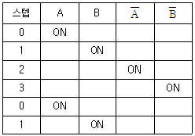
- 1상 여자 방식
- 2상 여자 방식
- 1-2상 여자 방식
- 3상 여자 방식
(정답률: 58%)
62. 기계적 변위량(길이, 각도)을 저항 변화로 검출하는 센서는?
- Potentiomter
- Photo transistor
- Thermocouple
- Tachho gnerator
(정답률: 69%)
63. 자장 속에서 도선에 전류가 흐를 때 전류가 받는 힘의 크기와 거리가 먼 것은?
- 전류의 세기에 비례한다.
- 자장의 세기에 반비례한다.
- 자장 속에 있는 도선의 길이에 비례한다.
- 직각일 때 힘의 크기는 최대가 된다.
(정답률: 47%)
64. 다음 중 센터리스연삭기에 대한 설명으로 옳은 것은?
- 중공 공작물 연삭은 불가능하다.
- 고도의 숙련 작업을 요구한다.
- 가늘고 긴 공작물 연삭은 불가능하다.
- 긴 홈이 있는 공작물 연삭은 불가능하다.
(정답률: 60%)
65. 서보시스템에서 어떤 신호의 출력값이 처음으로 목표값에 도달하는데 걸리는 시간이 0.3초라면 지연시간은?
- 0.1초
- 0.15초
- 0.2초
- 0.25초
(정답률: 83%)
66. 다음 중 자동차 부품의 일종으로 노면에서 전달되는 충격을 댐퍼 등과 병용하여 충격과 진동을 완화시키는 것은?
- 나사
- 기어
- 스프링
- 풀리
(정답률: 87%)
67. 대상물이 가지고 있는 온도의 정보를 감지하는 센서는?
- 습도센서
- 자기센서
- 온도센서
- 음파센서
(정답률: 90%)
68. 아래 보기와 같은 기계제작 공정이 필요할 경우 올바른 작업 순서는?
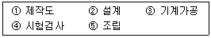
- ① → ② → ③ → ⑤ → ④
- ② → ① → ④ → ⑤ → ③
- ② → ① → ③ → ⑤ → ④
- ④ → ② → ① → ③ → ⑤
(정답률: 77%)
69. 다음 그림과 같은 파형의 주파수는?
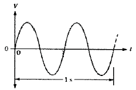
- 1 Hz
- 2 Hz
- 4 Hz
- 8 Hz
(정답률: 80%)
70. 직류 전류에 의해 발생된는 전기장은?
- 극성이 변하지 않는 교번자장
- 극성이 변하고 일정한 자장
- 극성이 변하지 않는 일정한 자장
- 연속적으로 극성이 변하는 교번자장
(정답률: 75%)
71. 다음 논리도에 관한 논리식은?
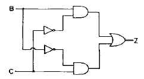
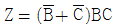
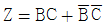
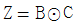
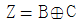
(정답률: 61%)
72. 다음 설명 중 틀린 것은?
- 코일은 직렬로 연결할수록 인덕턴스가 커진다.
- 콘덴서는 직렬로 연결할수록 용량이 커진다.
- 저항은 병렬로 연결할수록 저항이 작아진다.
- 리액턴스는 주파수의 함수이다.
(정답률: 60%)
73. 컴퓨터를 이용한 설계작업(CAD)의 효과라고 볼 수 없는 것은?
- 생산성이 향상된다.
- 설계해석이 어렵다.
- 설계시간이 단축된다.
- 설계의 신뢰성이 향상된다.
(정답률: 88%)
74. 18°의 스텝각을 갖는 스테핑 모터에서 분당 펄스수가 600인 경우 회전수(RPM)는 얼망인가?
- 10
- 12
- 30
- 120
(정답률: 66%)
75. 마이크로프로세서에서 어드레스 핀이 16개이면 몇 개의 번지를 직접 지정할 수 있는가?
- 16
- 256
- 1024
- 65536
(정답률: 68%)
76. 버스 구조를 하드웨어적으로 구현이 가능하게 해주는 핵심 디지털 논리 소자는?
- 쇼티크 TTL
- 엔코더
- 멀티플렉서
- 3상태 버퍼
(정답률: 49%)
77. 다음 중 A/D 변환기를 사용하지 않는 것은?
- 추종 비교형 변환기
- 레더형 변환기
- 축자 비교형 변환기
- 병렬 비교형 변환기
(정답률: 49%)
78. 다음의 명령어 중 서브루틴으로부터 원래의 프로그램으로 들어가는데 사용하는 명령은?
- RET
- RRA
- RLD
- LOOP
(정답률: 73%)
79. 다음 중 가속도 센서의 응용범위가 아닌 것은?
- 자동차 급브레이크 검출
- 노크음 검출
- 기계 이상진동 검출
- 타코미터
(정답률: 57%)
80. 다음 논리식
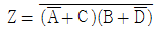
를 간소화 한 것은?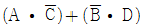
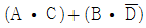
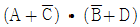
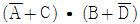
(정답률: 61%)